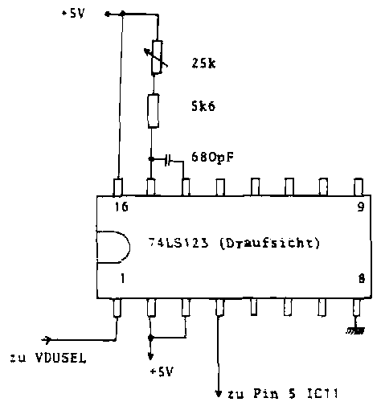

Nascom Journal |
0/80 |
Vielleicht haben Sie sich auch schon mal über die weißen Streifen geärgert, die immer dann auftreten, wenn oft auf den Bildschirm-Speicher zugegriffen wird. Die Streifen lassen sich jedoch mit recht einfachen Mitteln mithilfe des „Streifenkillers“ unterdrücken. Ein zusätzliches IC (74LS123) ist dazu nötig.
Man löst das Problem, indem man die VDUSEL-Dunkeltastzeit verlängert. Dazu wird ein Monoflop 74LS123 verwendet.
Man kann mit der folgenden Schaltung arbeiten:

Die Leitung Vdusel wird an Pin 5 von IC11 aufgetrennt. Im einfachsten Fall kann man das realisieren, indem man den Pin 5 des IC11 aus der Fassung biegt. Dann bauen Sie die kleine Schaltung auf einem Stückchen Veroboard auf, wie es die Schaltung zeigt. Das Vdusel-Signal liegt noch immer an Pin 5 der Fassung von IC11 an, wir haben ja nur das Beinchen herausgebogen. Man kann das Signal von Pin 5 der IC11-Fassung an Pin 1 des zusätzlichen 74LS123 führen. Von Pin 4 des zusätzlichen Monoflop führt dann eine Leitung zum rausgebogenen Pin 5 des IC 11. Mit dem 25k-Potentiometer kann man später die zusätzliche Verzögerung einstellen.
Der Einstellvorgang ist recht einfach. Mit einem T-Befehl:
T0 FFFF
läßt man sich einen sehr großen Bereich auf dem Bildschirm ausgeben. Dann dreht man solange am Potentiometer, bis man das optimale Ergebnis hat. Jetzt zeigt sich ein anderer Effekt, daß nämlich bei häufigem Speicherzugriff Teile der dargestellten Zeichen fehlen. Dieser Effekt ist aber weit weniger unangenehm und auffallend, als der gewohnte „Schnee“.
MK
Konditionen: Die Spalte „Kleinanzeigen“, die je nach Bedarf ggfls erweitert wird, steht allen Nascom-Benutzern für Anzeigen mit bis zu 40 Worten kostenlos zur Verfügung. Was über 40 Worte hinausgeht, kostet 3.– pro Zeile. Dies gilt nicht für gewerbliche Kleinanzeigen, für die Sie bei Bedarf bitte eine Preisliste anfordern.
Gelegenheiten !!! Metallpapierdrucker für Nascom inklusive 11 Rollen Metallpapier . Druckt Hex-Listings, BASIC, und TINY-BASIC Listings. Funktioniert auch als „Schreibmaschine“. Zu haben für 395.– komplett.
Streifenschreiber Siemens T 68 mit Zusätzen Lochstreifenleser und Lochstreifenstanzer. 198.– Sprachprozessor für Amateurfunkstation Typ KP2A für wenig Geld zu haben. Preis Verhandlungssache. Bitte schreiben Sie an:
Heinz Oligmüller
__________ _
____ __________
| Seite 9 von 12 |
|---|